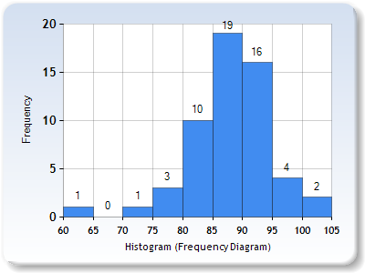

CS160 is over!
Thank you all for an amazing summer. You learned a lot and created some amazing things!
I want to showcase all the amazing apps that came out of the class this year, in no particular order. Additional information, including code, can be found on the course hackster pages.
HaggleBuddy : Team Jaws (Ace Haidrey, Sarah Huang, Jordan Wong, Huini "Whitney" Xu)
your world, your buddy, your bargainGPeeS : Team Mynstur (Qie Bian, Jingyi Li, Ashish Krishna, Ryan Wilson)
go to the restroom without going out of your waySafe Radius : Team HYJJR (Yue Cao, Harry He, Judy Lai, Riva Madan, Donghao "Jason" Su)
worry-free travelling with childrenTourio : Team ELKREW (Junzhu "June" Cong, Shawn Huang, Prudhvi Lokireddy, Tanin Phongpandecha)
do what the locals doBACtracker : Team Bloodhound Gang (Avi Frankl, Vincent Hayashi, Stephanie Law, Matthew Waliman)
we've got your BACHeart Rider : Team Asia (Xiaoyi Cheng, Hao Fu, Zhuoming Li, Jash Mahipal)
educate and rideWildlife Discovery : Group F---This is not our grade (Sarina Gross, Chenxiang Xu, Hao Ran Raymond Lin)
Discover nature's wild sideSleep Shift : Team Just In Time Development (Tatiana Ferreyra, David Ju, Josef Conrado Nunez, Ianto Lin Xi)
master your circadian rhythmPokemonsters : Team E and the Ds (Daniel Anderson, Destine Lee, Duncan McAdam, Eric Zhao)
watch me catch 'em all!Emergency Response : Team HAZY (Han Chen, Zachary Goldstein, Yang Li, Amy Wong)
making the world a safer placei-Nventory : Team N-droids (Farandy Ramadhana, Jonathan Sheu, Jennifer Tang)
your personal inventory assistantThe Building Scavenger : The Pandas (Hongjun Jin, Gordon Lai, Qianmei Luo, Nick Wissman)
discover amazing architecture around youPlutus : Team Tomato Gummies (Jonathan Lai, Khalid Shakur, Shi "Cozy" Shu, Melanie Zhao)
don't let your money fly awayBondfire : The Next Medium-Sized Thing (Jessica Chiu, Kenny Dang, Christian James Garcia, Anne Lin, Arnold Martinez)
start your adventureFor your reference, the final grade distribution of this course:

Below I've archived all the original content of this site.
welcome to CS160!
CS160 is an introduction to Human Computer Interaction (HCI). You will learn to prototype, evaluate, and design a user interface. You will be expected to work within a group of four or five students in this project-based course. Your project topic will be proposed by your group and your project design and implementation will follow a human-centered process. The final result will be an interactive prototype of a novel user experience carefully tailored to the needs of your intended users.
In contrast to most of the other CS classes at Berkeley, CS160 does not primarily focus on particular algorithmic techniques or computer technologies. Instead, the focus of the course is on developing a broad set of skills needed for user-centered design. These skills include ideation, needs assessment, communication, rapid prototyping, algorithmic implementation and evaluation.
This semester we will be piloting a new format of the CS160 course. This will involve shuffling lecture to 2 days/week and using the other 2 days/week as an in-class design studio. During this studio time, course staff will be available to help with and give feedback on any assignments that are out, and you will have time to work with your groups on your final projects. The studio time will be used for several required course activities, for example a group brainstorm and design critiques.
project theme - exploration!
This term's themes will be all things vacation, travel, adventure, and international culture. As students come from across the country and across the globe to converge on Berkeley for its diverse summer offerings, we'll celebrate those journeys by designing some fun exploration apps!What kind of app would be useful if you were in a museum in a foreign country where you didn't speak the language? How about if you went to visit your old-timey grandma in Idaho and needed to learn to help her churn butter? If you just went to shop at Ranch 99 and couldn't figure out which vegetables to pick up for the awesome Asian recipe you were trying to cook? If you found yourself on a beach in Cancun and needed to figure out how to order fish tacos? How do these designs change if you aren't designing for yourself, but for a child, your great-uncle, or a visitor to the country?
project technology
We are fortunate to have access to a set of Android watches that we'll be using to create our interactions this semester. Each group will need to have at least one Android device that can pair with the watches (we'll ensure this through our group assignments), and each group will be able to check out one watch near the beginning of the term. The specific model we'll be using is the Moto 360, which will offer a fun design challenge: the screen is round!